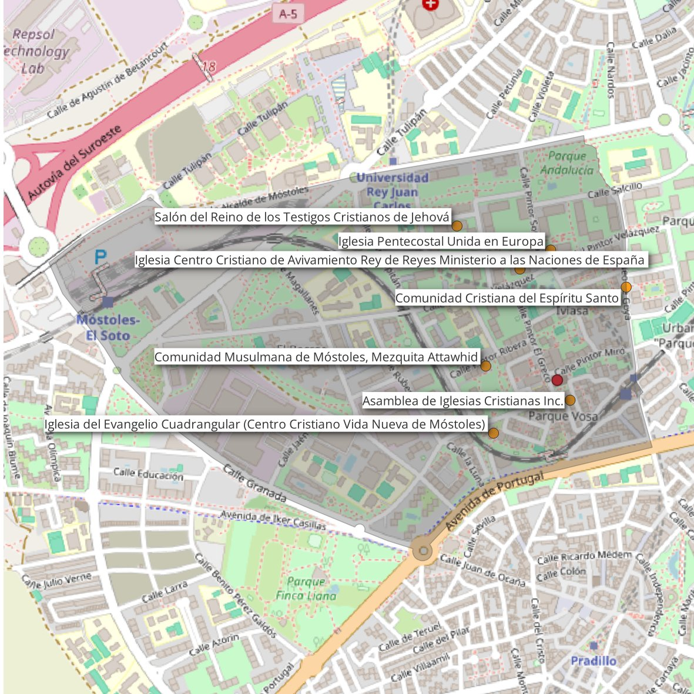
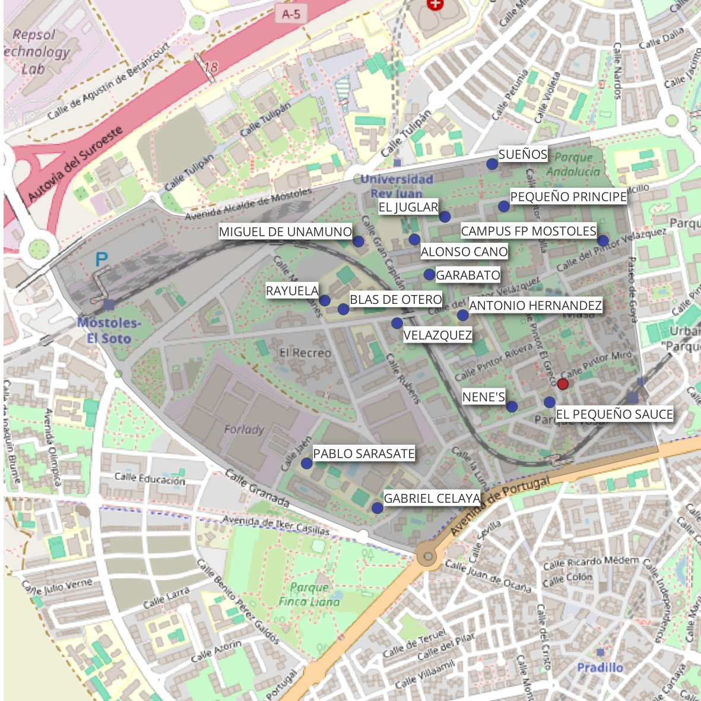

Puntos de interés en el territorio parroquial
Parroquia Nuestra Señora de la Consolación (Móstoles) · Arciprestazgo de Móstoles
Entidades religiosas no católicas

7 entidades religiosas no católicas en el territorio de la parroquia.
Evangélicos (5)
- Asamblea de Iglesias Cristianas Inc.Calle Parque Vosa 9, Móstoles
- Comunidad Cristiana del Espíritu SantoPaseo de Goya 16, Móstoles
- Iglesia Centro Cristiano de Avivamiento Rey de Reyes Ministerio a las Naciones de EspañaCalle Pintor Velázquez 14 6º, Móstoles
- Iglesia del Evangelio Cuadrangular (Centro Cristiano Vida Nueva de Móstoles)Calle Carcavilla 9, Móstoles
- Iglesia Pentecostal Unida en EuropaCalle Pintor Velazquez 12, Móstoles
Musulmanes (1)
- Comunidad Musulmana de Móstoles, Mezquita AttawhidCalle del Pintor Ribera 11 Posterior, Móstoles
Testigos de Jehová (1)
- Salón del Reino de los Testigos Cristianos de JehováCalle Alonso Cano 6 Local 11 (acceso por la parte posterior), Móstoles
Fuente: Registro de Entidades Religiosas del Ministerio de la Presidencia, Justicia y Relaciones con las Cortes. Situación en el mapa: dirección geocodificada con CartoCiudad (IGN) o Nominatim (OpenStreetMap).
Centros educativos

15 centros educativos en el territorio de la parroquia (público: 10, privado: 5).
| Centro | Tipo | Titularidad | Domicilio | Web |
|---|---|---|---|---|
| ALONSO CANO | Colegio de educación infantil y primaria | Público | Calle de Alonso Cano, 1, 28932 Móstoles | Página web |
| ANTONIO HERNANDEZ | Colegio de educación infantil y primaria | Público | Calle del Pintor Velázquez, 13, 28933 Móstoles | Página web |
| BLAS DE OTERO | Colegio de educación infantil y primaria | Público | Calle del Pintor Velázquez, 20, 28933 Móstoles | Página web |
| CAMPUS FP MOSTOLES | Centro privado de formación profesional específica | Privado | Calle del Pintor Velázquez, 8, 28933 Móstoles | |
| EL JUGLAR | Escuela infantil | Público | Calle de Alonso Cano, 8, 28933 Móstoles | Página web |
| EL PEQUEÑO SAUCE | Escuela infantil | Público | Calle del Pintor Murillo, s/n, 28933 Móstoles | Página web |
| GABRIEL CELAYA | Colegio de educación infantil y primaria | Público | Calle del Pintor Murillo, 32, 28933 Móstoles | Página web |
| GARABATO | Escuela infantil privada | Privado | Calle Pintor Salvador Dalí, 3, 28933 Móstoles | |
| MIGUEL DE UNAMUNO | Colegio de educación especial | Público | Calle del Gran Capitán, 19, 28933 Móstoles | Página web |
| NENE'S | Escuela infantil privada | Privado | Calle del Pintor Murillo, 10, 28933 Móstoles | |
| PABLO SARASATE | Colegio de educación infantil y primaria | Público | Calle Jaén, 4, 28935 Móstoles | Página web |
| PEQUEÑO PRINCIPE | Escuela infantil privada | Privado | Calle Juan de Juanes, 10, 28933 Móstoles | |
| RAYUELA | Instituto de educación secundaria | Público | Calle Magallanes, 14, 28933 Móstoles | Página web |
| SUEÑOS | Escuela infantil privada | Privado | Avenida del Alcalde de Móstoles, 29, 28933 Móstoles | Página web |
| VELAZQUEZ | Instituto de educación secundaria | Público | Calle del Pintor Velázquez, 25, 28935 Móstoles | Página web |
Fuente: registro de centros educativos de la Comunidad de Madrid. Solo se recogen los centros en situación de alta.